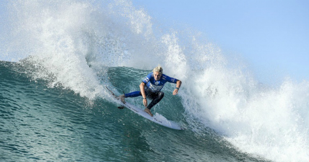

thruster
La forma mas convencional y moderna de surf
Seas principiante o profesional este es el tipo de tabla mas comun a la hora de surfear.

Origenes
El surfista australiano Simon Anderson vino con la idea después de frustrarse con el "aguante" en olas grandes, decidiendo agregar una quilla central en 1980
Características
- Este tipo de set up usa tres quillas iguales, donde las quillas laterales se encuentran mas adelante y la quilla central es mas trasera en la tabla.
- Esta combinación ofrece mucha mas estabilidad y maniobrabilidad que un twin fin o un single fin.
- Este tipo de tabla es por exelencia la mejor opción para un surf high-performance